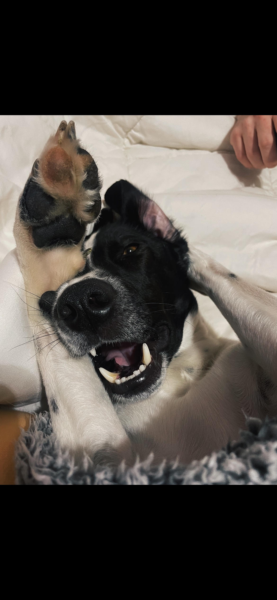

Dogs have the capability to connect with humans on an emotional level and offer love, loyalty and companionship. Their playful energy brings comfort, joy and relief at any time. They also have a protective, loyal nature in which you can rely and depend on them. Being incredibly smart, they can provide help such as in the work force or as service dogs.
Unfortunately, about 3.1 million dogs enter US animal shelters per year and only 2 million get adopted. This leaves about 1.1 million dogs without a home annually. Those dogs are left with poor living conditions, bad treatment, and often times even put down. There is a common phrase of adopt don't shop. Which is important to consider when considering getting a new dog.
Adoption site. Just put in your address, adjust radius, and start finding!